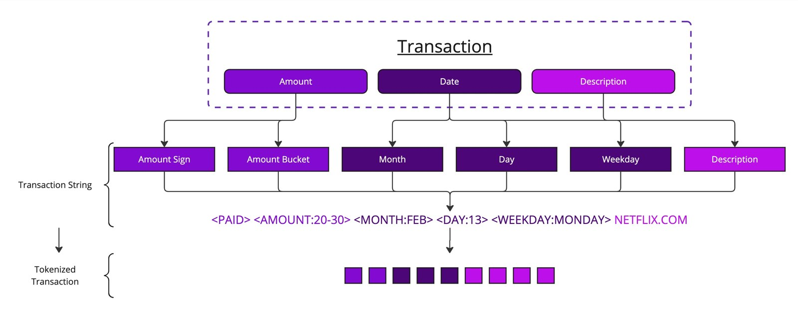

Con 3 ejemplos por equipo, entiende órdenes escritas con otras palabras: «escape de lubricante» es una fuga.
Pero «hay fuga» y «no hay fuga» le parecen casi lo mismo: la negación se le escapa.
Prueba piloto del 29 de octubre de 2026: 16 órdenes redactadas con otras palabras, clasificadas con 3 ejemplos por equipo. Generado con ejemplos/codificador_5b.py.
por año creció el cómputo para entrenar los modelos de IA notables entre 2010 y 2024.
En los modelos de lenguaje de frontera, unas 5 veces por año desde 2020.
Sevilla y Roldán (2024), Epoch AI: 4,1 veces por año (IC 90 %: 3,7 a 4,6). Epoch AI, Trends (feb. 2026). Datos de Epoch AI con licencia CC BY 4.0.
Preentrenamiento
Predecir el siguiente token, a escala
Modelo
Parámetros
Tokens de entrenamiento
GPT-3 (Brown et ál., 2020)
175 000 millones
300 000 millones
Chinchilla (Hoffmann et ál., 2022)
70 000 millones
1,4 billones
Leyes de escala
Más grande, más datos, más cómputo: menos error
«La pérdida escala como una ley de potencia con el tamaño del modelo, el de los datos y el cómputo» (Kaplan et ál., 2020).
Hoffmann et ál. (2022): para un cómputo dado, el modelo y los datos deben crecer por igual. Con el cómputo de Gopher, Chinchilla usó 4 veces menos parámetros y 4 veces más datos, y le ganó.
De su tabla 3 se deduce una regla práctica de unos 20 tokens por parámetro; el artículo no la enuncia así.
Kaplan et ál. (2020); Hoffmann et ál. (2022), tabla 1.
Ajuste por instrucciones y preferencias
De completar texto a seguir instrucciones
Ouyang et ál. (2022), InstructGPT. El refuerzo se estudia en la Unidad 6; en la Sesión 3 vimos su uso en los modelos de razonamiento.
Capacidades y límites
Lo que pueden, y lo que no
Alucinan
«Los modelos de lenguaje alucinan porque el entrenamiento y la evaluación premian adivinar en lugar de reconocer la incertidumbre» (Kalai et ál., 2025).
Tienen fecha de corte
No saben lo que pasó después de su entrenamiento: junio de 2026 para Claude Haiku 5.5; 18 de mayo de 2026 para GPT-6 Luna.
Leen mucho a la vez
Una ventana de contexto de alrededor de un millón de tokens en los modelos pequeños actuales de Anthropic y OpenAI.
Cobran por token
Claude Haiku 5.5: US$0,10 por millón de tokens de entrada y US$0,50 de salida. En miles de consultas diarias, el costo y la espera cuentan.
Documentación oficial de Anthropic y OpenAI, consultada el 29 de octubre de 2026. Kalai, Nachum, Vempala y Zhang (2025), preprint.
Costo
El mismo texto en español cuesta más tokens
Tokenizador
Español
Inglés
El español cuesta
GPT-2 (2019, entrenado en inglés)
24
13
1,8 veces
Qwen2.5 (2024, multilingüe)
19
14
1,4 veces
En un estudio de 2023, el español pagó entre 1,55 y 2,23 veces los tokens del inglés, según el tokenizador (Petrov et ál.).
Frase: «La bomba 3 presenta vibración alta y temperatura elevada en el rodamiento.» Generado con ejemplos/modelo_de_lenguaje.py. Petrov et ál. (2023), NeurIPS, tabla 1.
El lugar de las redes profundas
La red propone, otra técnica verifica
Sesión
La red propone o percibe
Lo verifica
2
un LLM escribe un plan
un validador de planes
3
un LLM traduce una política
un solver (Z3)
4
un modelo preentrenado detecta
el pipeline clásico o una persona
5
un transformer clasifica una orden
una regla de negocio o una persona, si es urgente
En datos de tabla
«Los modelos de árboles siguen siendo el estado del arte con datos medianos (unas 10 000 muestras)» (Grinsztajn et ál., 2022).
El AI4I del 5A tiene 10 000 registros. Los árboles son tema de la Unidad 6.
Dos casos reales
Cuándo gana un transformer, y cuándo no
Nubank · transacciones como tokens

Un transformer entrenado con unos 500 000 millones de tokens de transacciones, en uso para todos los clientes de un mercado (más de 100 millones de usuarios). Se extiende a México y Colombia.
Órdenes de mantenimiento · pocos datos
3896 órdenes de trabajo de un parque eólico. Un transformer ajustado logró F1 macro de 0,63; una regresión logística, 0,75.
Los autores lo atribuyen a los pocos datos etiquetados.
Fraunhofer IEE y NIST (Lutz et ál., 2023).
Braithwaite et ál. (2025), nuFormer, fig. 1, arXiv, CC BY 4.0; Nubank, comunicado del 11-jun-2026. Lutz et ál. (2023), Energies 16(24), 7937, CC BY 4.0.
Para su proyecto
Guía de decisión: ¿qué tipo de modelo?
LLM vía API
Modelo preentrenado pequeño, en el propio equipo
Red propia, entrenada con sus datos
Modelo clásico (Unidad 6)
Datos
texto o imágenes; tareas abiertas
texto o imágenes; tarea acotada: clasificar, buscar
cualquier tipo, con muchos ejemplos
tablas
Ejemplos etiquetados
ninguno o pocos
decenas
miles o más
cientos a miles
Costo por consulta
por token, y espera
casi cero
casi cero, más el costo de entrenar
casi cero
Explicabilidad
explica, pero hay que verificar
baja
baja
alta: reglas legibles
Privacidad
los datos salen de la organización
quedan adentro
quedan adentro
quedan adentro
En MantenIA
resumir una orden larga
enviar cada orden a su equipo (5B)
predecir fallas con muchos registros (5A)
predecir fallas con 10 000 registros
Cierre de la sesión
El mapa de la Unidad 5
Proyecto del curso · paso de la unidad
¿Qué parte de su proyecto podría resolver una red?
¿Hay una parte que una red neuronal o un LLM podría resolver: clasificar, predecir, leer texto?
¿Qué datos necesitaría, y cuántos ejemplos etiquetados tienen?
¿Cómo se verificaría su resultado, según la guía de decisión?
En casa · unos 60 min
Agreguen estos pasos al plan.md del equipo y revísenlo con la lista de chequeo (J.6). Si su proyecto no necesita una red, expliquen por qué.
Entrega: la fecha se anuncia en clase.
Trabajo independiente
Dos trabajos, sin programar
TI-1 · Entrene una red sin escribir código
En TensorFlow Playground, cambie capas, neuronas, activación, tasa de aprendizaje y regularización, y relaciónelo con un problema de su organización. Unos 65 min.
TI-2 · Lleve el Laboratorio 5B a su organización
Clasifique de 30 a 60 textos cortos de su trabajo con las tres arquitecturas y con un LLM, y compare aciertos y costo. Unos 70 min.
Sin datos personales ni confidenciales. Entrega al inicio de la semana 4. Detalles en trabajo_independiente.md.
Hoy vimos cómo aprende una red. La Unidad 6: árboles y reglas que se pueden leer, y el aprendizaje por refuerzo, donde una recompensa mal escrita se «cumple» sin cumplir el objetivo.
Sevilla y Roldán (2024). Training compute of frontier AI models grows by 4-5x per year. Epoch AI. epoch.ai · Epoch AI (2026). Trends, CC BY 4.0
Brown, T. et ál. (2020). Language models are few-shot learners. NeurIPS 33. arXiv · Kaplan, J. et ál. (2020). Scaling laws for neural language models. arXiv · Hoffmann, J. et ál. (2022). Training compute-optimal large language models. NeurIPS 35. arXiv
Ouyang, L. et ál. (2022). Training language models to follow instructions with human feedback. NeurIPS 35, 27730–27744. arXiv
Kalai, A. T., Nachum, O., Vempala, S. S. y Zhang, E. (2025). Why language models hallucinate. arXiv · Huang, L. et ál. (2025). A survey on hallucination in large language models. ACM TOIS 43(2). arXiv
Petrov, A. et ál. (2023). Language model tokenizers introduce unfairness between languages. NeurIPS. arXiv · Grinsztajn, L., Oyallon, E. y Varoquaux, G. (2022). Why do tree-based models still outperform deep learning on typical tabular data? NeurIPS 35. NeurIPS
Braithwaite et ál. (2025). nuFormer. arXiv, CC BY 4.0 · Nubank (2026). Comunicado · Lutz et ál. (2023). Energies 16(24), 7937. arXiv, CC BY 4.0

.jpg){kind=link}